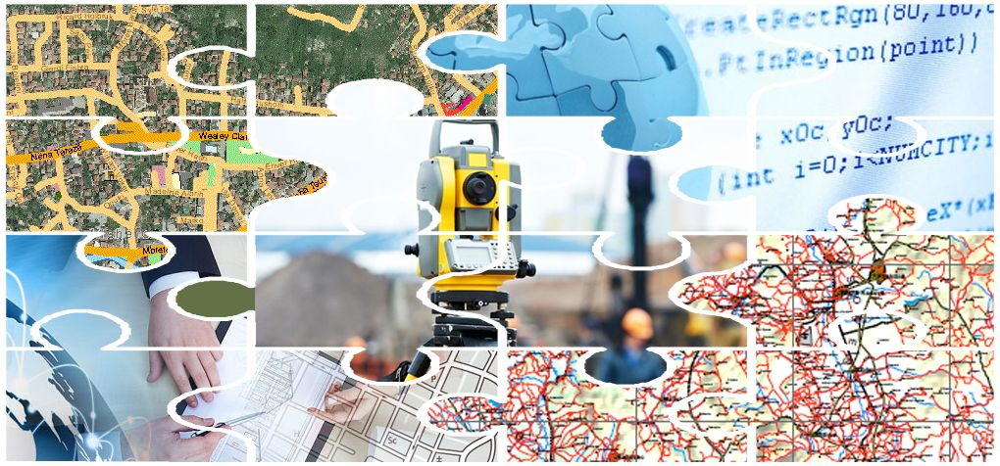
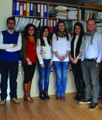
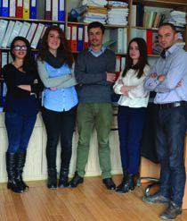
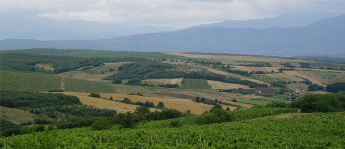

Management Team
High professionals with prestigious educational backgrounds — selected by the board of the company.
Home / About
Who we are, what we stand for, and the teams that deliver.
Geo&Land is specialized in Geoinformation disciplines — GIS, land administration, cadastre, agriculture and software development. Recently, Geo&Land has implemented many national projects in Kosovo, few of them carried out for the first time in our country.
We are trained and certified by prestigious and well-known standards and institutions to offer high quality services with a qualified and diverse staff — certified by ISO 9001:2008 for geodetic services, GIS and software development as well as project management, licensed by the Kosovo Cadastral Agency for cadastral and property rights services, and by MAFRD for compilation of forest management plans.
Geo&Land's current strategy is to realize large scale projects in the field of Geoinformation, including software development and Web-GIS systems in different commercial and open source platforms. The software development department is rising rapidly, taking into account trade development and INSPIRE directives. Geo&Land intends to remain a leader in the field of GIS and land administration in Kosovo. Today, our activities extend into Albania and North Macedonia.
We believe that integrity, collaboration, commitment, and professionalism are the core values that enable us to create the best working environment, in which passion, open-mindedness, and creativity are fostered.

Our mission is to provide the highest quality services in order to meet client needs — hiring and training our team so that we do not just complete projects, but form lasting relationships. Based on our experience, one of our business components lies in institutional development, training and knowledge transfer. All our business areas are supported by senior-level consultancy, research and development.
We aim to do business in a way that clients can always count on us — and keep counting on us.
Institutional development and training so that customers benefit from our experience and capability.
Driven not just to achieve goals and complete projects, but to go beyond and give the best possible service.
Senior-level consultancy and R&D ensure that services are realized with the best available techniques and standards.
The hiring process is a highly competitive one. The selected members of our staff are not only successful academically, but eager and passionate in what they do.
High professionals with prestigious educational backgrounds — selected by the board of the company.

Specialized in GIS and land surveying, qualified and trained to provide quality services across our surveying projects.

Trained to solve problems with creative solutions; the applications we deliver are sophisticated, easy to use, and come with manuals and instructions.

Working to improve the agricultural landscape of Kosovo — consulting farmers and helping ideas become businesses with access to grants.
After a successful completion of a review process by Bureau Veritas, Geo&Land received its ISO 9001:2008 for GIS, geodetic, cadastre and project management — a token of the quality of services offered to our clients.
Bureau Veritas — for geodetic and cadastre services, GIS and software development, and project management.
Licensed for compilation of long-term forest management plans — Ministry of Agriculture and Forestry.
Licensed for cadastral and property rights registration — Kosovo Cadastral Agency.
The list of our clients reflects the range of our projects and the professionalism with which we carry out the services — public and private, from different industries. Soon after our establishment we started to grow beyond our borders to include international organizations.
Selected organizations Geo&Land has worked with, as cited in project records
Farmer Register System delivered as part of an EU-financed project; long-term forestry management plans contract with the Kosovo Forest Agency; contracts with the Ministry of Agriculture for the vineyard register.
USAID contract — creation of digital and hard-copy maps for municipalities in Kosovo; farmer register system completed.
Brezovica Resort expropriation across 3,000 ha, contracted by Deloitte/USAID.
INTERGEO conference attendance; KAVEKO workshop; Geo&Land organizes the international conference on Geoinformation, Space and Defence.
KFIS training for the Kosovo Forest Information System.
KFIS GIS module with FAO; database project for the Ministry of Environment and Spatial Planning; expropriation application for the Drenas economic zone.
Soil map of the Municipality of Rahovec, as part of a consortium.
UAV surveying service launched; AIRBUS partnership presented.
We employ only the best. In our journey to achieve our mission, we ask future employees to be committed, team players, communicative, professional in their field, and respectful of work ethic. If that is you, send us your application — note that we read applications when a vacancy is open.
N 42.6629° · E 21.1655°
Prishtina · Kosovo